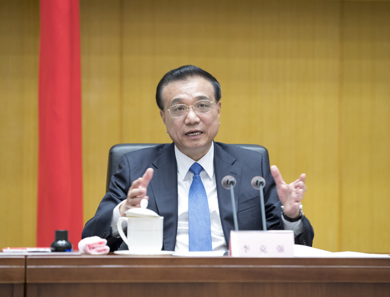
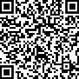

首页 > 总理
在国务院第二次廉政工作会议上的讲话
李克强
（2019年4月23日）
建设廉洁政府、持之以恒正风肃纪，打造持廉守正、勤政为民的公务员队伍，是国务院每年都要专题部署并不断深入推进的重点工作。这次会议的主要任务是，以习近平新时代中国特色社会主义思想为指导，全面贯彻党的十九大和十九届二中、三中全会精神，认真学习贯彻习近平总书记在十九届中央纪委三次全会上的重要讲话精神，按照十九届中央纪委三次全会和《政府工作报告》有关党风廉政建设要求，总结去年政府系统党风廉政建设和反腐败工作，研究部署今年重点任务。刚才，税务总局和广东省、四川省政府主要负责同志发了言，讲得都很好。下面，我讲几点意见。
一、深入推进政府系统党风廉政建设和反腐败工作，为保持经济社会持续健康发展提供坚强保障
过去一年，是新一届政府履职的第一年。在以习近平同志为核心的党中央坚强领导下，政府系统深入贯彻全面从严治党部署和要求，紧密结合政府工作实际，采取有力举措，党风廉政建设和反腐败工作取得新进展。一是以深化改革转职能推动廉政建设、激发市场活力。有效减权限权、规范权力运行，是推进反腐倡廉的内在要求，也是使市场在资源配置中起决定性作用、更好发挥政府作用的基础条件。在政府机构改革中，我们注重将优化机构设置和职能配置结合起来，重在职能转变。同时，深入推进简政减税降费，实行全国统一的市场准入负面清单制度，取消下放一批行政审批事项，全面实施“双随机、一公开”监管，加强公平公正监管，推进“互联网+政务服务”。加大政务公开力度。我国营商环境明显改善，国际排名大幅提升。去年日均新设企业超过1.8万户，新设外资企业增长近70%，在经济下行压力加大、国际环境极为复杂的背景下，市场能有这样的表现，的确来之不易。今年以来这两方面均继续保持较快增长势头。实施这些改革举措，对于保持经济运行总体平稳、稳中有进发挥了关键作用，也从源头上抑制了寻租腐败现象的发生。二是以严明纪律肃贪腐推动政风作风转变。认真落实中央八项规定及其实施细则精神，坚定不移纠正“四风”尤其是形式主义、官僚主义。巩固国务院“约法三章”成果，继续压减“三公”经费。严肃查处各类违法违规行为，惩处一批腐败分子。三是以健全制度强监管推动公共资金资产安全高效使用。全面启动财政预算绩效管理改革，加大预决算公开力度。加强国资国企和公共资源交易监管。发挥审计监督作用，促进增收节支和挽回损失近5000亿元。四是以强化激励严问责推动改革发展政策和部署落实。开展国务院第五次大督查和专项督查，加大激励和约束力度，对真抓实干、工作成效好的地方和部门给予表扬和政策激励，对不作为、乱作为的严肃问责，对安全生产、食品安全、环境保护等重点领域失职渎职行为进行倒查追责。政府系统党风廉政建设和反腐败工作的深入推进，有效增强了政府公信力和执行力，有力促进了经济社会持续健康发展。
在充分肯定成绩的同时，也要清醒地看到，政府系统党风廉政建设和反腐败工作还存在一些问题和不足。一些地方、部门和单位贯彻全面从严治党要求不力，思想松懈、纪律松弛、作风松散。形式主义、官僚主义突出，重表态轻行动不务实，空耗精力的文件会议多、名目繁杂的督查检查考核多、流于表面的痕迹管理多，而且层层加码，让基层不堪重负。少数干部不担当不作为不尽责，工作拖沓敷衍、推诿扯皮，遇到矛盾和问题上推下卸，有的甚至弄虚作假。政府职能转变尚不到位，市场准入限制、行政审批事项还是过多，公平竞争、公正监管、公共服务存在不少短板，企业和群众对办事难办事慢、乱收费乱罚款等意见仍然较多，有的地区营商环境较差。规范权力运行的制度体系还不健全，政务公开有待加强。滋生腐败的土壤尚未根除，一些领域腐败问题多发。近期接连发生危化品爆炸、火灾等重特大安全生产事故，造成重大人员伤亡和财产损失，暴露出安全生产领域存在不少薄弱环节。政府系统党风廉政建设和反腐败斗争任重道远，必须持之以恒、常抓不懈。
今年我国发展面临的环境更复杂更严峻，要做好打硬仗的充分准备。年初以来，随着前期实施的降准、减税等政策措施和近期发出的宏观政策信号效应显现，市场预期明显改善，经济运行总体平稳，特别是3月份以后，出现不少积极变化。一季度国内生产总值同比增长6.4%，超出了我们原来的预估。近期国际货币基金组织发布报告，再次调降世界经济增长预期，但对我国经济增长预期进行了上调。要看到经济向好的变化，坚定信心，但也不能低估困难，更不能盲目乐观。在世界经济增速整体放缓、保护主义加剧的情况下，加上我国发展中还有不少困难和问题，中国经济要顶住下行压力，是很不容易的。当前积极的因素在增多，但不稳定不确定因素也在增多，我国经济平稳运行态势尚不稳固、下行压力仍不容忽视，而且地区走势还在继续分化，特别是一些基层财政困难，很多突出矛盾和问题亟待解决。要毫不松懈地按照中央经济工作会议和《政府工作报告》部署，抓紧抓好各项工作，坚持推动发展和反腐倡廉两手抓、两促进，确保全年经济运行在合理区间，切实把党风廉政建设和反腐败工作不断引向深入。
做好政府系统党风廉政建设和反腐败工作，要以习近平新时代中国特色社会主义思想为指导，全面贯彻党的十九大和十九届二中、三中全会精神，不忘初心、牢记使命，树牢“四个意识”，坚定“四个自信”，坚决做到“两个维护”，坚持稳中求进工作总基调，深入落实全面从严治党要求，巩固发展反腐败斗争压倒性胜利，一体推进不敢腐、不能腐、不想腐，深化标本兼治，大力加强廉洁政府建设，加快转变政府职能、提高效能，弘扬优良作风，强化责任担当，确保完成今年经济社会发展主要目标任务。
二、强化正风肃纪，坚决把减税降费等重大决策部署落实到位
今年《政府工作报告》已经全国人大批准，具有法定效力，各级政府要依法履行职责，突出重点，把握关键，抓好各项目标任务落实。实施更大规模减税降费，是激发市场活力、应对经济下行压力的关键之策，是推动经济结构转型升级的重大举措，也有利于压缩权力寻租空间、促进廉政建设，具有多方面的意义。对此，市场期待，社会关注。但落实好这些政策并不容易，需要调整利益格局、优化财政收支结构，需要各级政府刀刃向内、自我革命、过紧日子，需要各地区、各部门加强协同、形成合力，需要各级干部转变作风、积极作为、做大量深入细致的工作。这是硬仗中的硬仗，我们一定要本着高度负责的精神，以求真务实的态度、扎实有力的工作，坚决把减税降费政策不折不扣落到实处。 一要着力落实减税政策，确保企业有明显感受。在支持企业发展的诸多方式中，减税能使各类所有制企业普遍受益，是最为直接有效、公平普惠的办法。企业按照税制的统一调整就可以自动享受税收优惠，不需要跑部门、跑项目，这样也可以有效减少寻租腐败行为。这次减税要做到“三个确保”，确保制造业税负明显降低，确保建筑业、交通运输业等行业税负有所降低，确保其他行业税负只减不增。由于服务业原来税率就比较低，这次没有下调，但通过实施加计抵扣政策也可以实现一定规模减税。总之，通过采取普惠性减税和结构性减税相结合的办法，可以确保所有行业税负只减不增。大规模减税是推动经济结构调整优化的战略举措，也有利于“放水养鱼”、培植财源、增强发展后劲，是一举多得的重大改革。 减税政策宣布后，市场预期明显改善，得到市场积极响应。前段时间我到地方去调研，看到一些制造业企业相关人员正在接受培训怎么填写新的增值税发票。企业普遍反映，减税将使企业大大降低成本、增加利润，有的企业利润甚至能增加10%以上，他们准备把减税的“真金白银”用于增加研发投入、扩大就业岗位。减税政策对市场预期的引导也是很明显的，今年1—2月份规模以上工业增加值同比增长5.3%，3月份一下子增幅就提高到8.5%，这也是2014年8月份以来最高的单月增幅，减税预期发挥了重要作用。增值税改革虽已于4月1日实施，但真正的减税效果如何要到5月份才能见分晓，而且要持续观察到年底。现在我们担心的是减税政策能否全部落实，如果一旦落实情况不好，企业反映效果不明显、感受不深，就可能导致市场预期反转，进而影响经济平稳运行。各有关部门、各地区要围绕减税念“紧箍咒”。落实减税政策，税务部门要发挥骨干作用，但这不仅是税务部门一家的事，各地区、各有关方面、各有关行业都有责任。特别是减税能否真正减下去，还取决于地方政府的努力，因为减税对地方财力的影响是很大的，这对地方工作是一个很大的考验。要确保所有行业税负只减不增、有些行业明显减负，各部门都要加强监测、仔细算账、协调衔接，合力推动减税政策落实下去。今年用于减税的资金不是靠扩大赤字、增加债务，而是中央政府通过增加特定国有金融机构、央企上缴利润和盘活沉淀的财政资金来筹集的。这一大笔钱要确保在一年之内落实到市场主体身上，但也很可能有人将之视为“唐僧肉”，当作巨额利益来追逐，这是决不允许的，决不能让市场主体感觉减税实惠成了“空中楼阁”、看得见得不到。如果那样的话，就将大大损害政府公信力，也会严重干扰市场向好的预期。所以，我在廉政工作会上必须强调这一点，因为这和主动作为、防范腐败寻租是紧密联系在一起的。各地区、各部门都要高度重视，不能仅在口头上说给企业创造了很多条件。如果企业预计减税能增加利润，最后一算账却没拿着，讲再多的好话也没用。各地区、各部门都要把更多精力放在推动减税政策落实上，对搞变通、打折扣或变换花样乱收费抵消减税效果的，要发现一起查处一起，决不姑息。 二要认真落实降低社保费率政策，确保企业明显减负、职工待遇不受影响。2015年以来，国务院已经5次降低或阶段性降低社保费率，但目前我国社保费率与国际水平相比总体还是偏高。企业觉得负担重，就会想办法避费逃费，也衍生出一些不公平甚至权力寻租问题。此外，有的领域社保基金还有大量结余，使用效率也不高。降低社保费率，有利于企业特别是小微企业发展，有利于增加就业，也有利于公平缴费、扩大参保面。按照有关部署要求，这项改革5月1日起就要正式实施，各地区、各部门一定要认真抓好落实。从目前看，小微企业是就业的主渠道，他们对社保缴费负担能否降低还是有担忧的。所以，我们要坚决做到“两个不得、一个务必”，即不得采取增加小微企业实际缴费负担的做法，不得自行对历史欠费进行集中清缴，务必使企业特别是小微企业社保缴费负担有实质性下降。目前，尽管有些省份企业职工基本养老保险基金出现了当期收不抵支情况，但全国总体上是收大于支，累计结余近5万亿元，我们还有战略储备性的全国社会保障基金权益近2万亿元，而且将继续划转部分国有资本充实社保基金，应该说具备比较强的支付保障能力。经过精算分析，养老保险费率降低后，不会影响职工待遇，养老金按时足额发放是有保障的，也不会影响养老保险制度的正常运行和可持续性。一些地方如果出现问题，首先要自己想办法，不要老盯着中央调剂基金或者中央财政。当然对困难确实大且自身工作做到位的地方，中央也会给予适当支持。今年企业职工基本养老保险中央调剂基金规模超过6000亿元，可以用来帮助一些地区弥补养老基金支付缺口，但我们不希望都用到弥补那些当期收不抵支的地区。要看到，降低社保缴费后，算下账来钱是够的。如果缺口还是大，就说明其中可能有管理不到位、不作为等现象，甚至存在腐败问题。社保基金是百姓的保命钱，决不允许挤占挪用，决不允许出现任何腐败行为。 三要开源节流平衡预算，确保民生等重点支出。今年减轻企业税收和社保缴费负担近2万亿元，这对企业是重大利好，但各级财政会有压力。增值税是共享税，中央和地方财政都要负担，要统筹考虑各方面情况，弥补减税带来的收支缺口。中央财政已经想了很多办法，各地区也要开动脑筋想办法，不仅要节流还要开源，要动存量、动真格，认真清点“家底”，挖潜盘活各类资金资产，多渠道筹集资金弥补减收。比如，各地都还有不少政府性楼堂馆所，有的租赁出去了且经营得很好，但收入却没有纳入预算；还有一些单位财政资金长期沉淀，趴在账上吃利息，成了部门利益，不仅没有绩效，也容易带来廉政风险。这些都可以想办法变现、想办法收回、想办法调用，这方面地方政府大有文章可做。减税降费改革举措虽然是在3月份全国人大会议上通过的，但之前已经跟各省（区、市）政府通过气。也有的省反映本省人代会已经开过了，预算平衡可能有一定困难。但也不是没有办法，地方政府是有资产、有家底的，是有办法、有空间调剂平衡的。从今年一季度财政运行情况看，非税收入同比增长了11.8%，是一段时期以来增速偏高的，这其中有合理因素，但也不排除有不规范的行政事业性收费，甚至可能是乱收费。当然，如果是通过调用政府体系内部的存量资金增加非税收入，这是可以的；但若把非税负担加到企业身上就是违规了，甚至会产生腐败问题。必须强调的是，财力再紧张，也决不能为平衡预算打乱收费的小算盘。各级政府都要刀刃向内动真格，将长期沉淀资金一律收回，把长期效率不高的政府经营性资产盘活变现，不必要的花销要坚决砍掉。与此同时，还要保证民生支出、工资发放、政权运转，这些都必须保障到位。 四要勤俭节约、精打细算过紧日子，促进行政成本明显降低。今年我们提出中央财政一般性支出要压减5%以上、“三公”经费再压减3%左右的要求，实际上中央预算除重点和刚性支出外的一般性支出压减了10%，一些部门和单位还主动加大了“三公”经费压减力度，这体现了各部门自我加压的精神，也反映出政府自身节支挖潜的空间还不小。各级政府都要厉行节约，大力压减一切不必要的行政开支，所有的办公运行、后勤保障、会议差旅、公务接待、出国出境等都要行简约、倡俭朴、戒奢华，而且要完善制度规范，界定具体项目，长期坚持下去。要严格财经纪律，坚持预算公开。各部门全部收入都要纳入预算，应公开尽公开，坚决杜绝几本账、“账外账”。要严格预算执行，任何部门都不能违反预算规定乱开口子。要大力规范政府采购，节约支出。针对社会上反映比较多的政府采购质次价高、效率低下甚至暗收回扣等突出问题，要进一步改革完善政府采购制度，提高采购透明度，严惩腐败行为。 五要更大力度实施简政，推动营商环境不断优化。大道至简，简政易从。有权不能任性，用权必须规范。历史上有很多明证，烦苛管制必然导致停滞和贫困，简约治理则带来发展与繁荣。改革开放特别是党的十八大以来，我们坚持市场化改革取向，持续推进“放管服”改革，极大激发了市场活力和社会创造力。在新的形势下，要进一步念好“简”字诀，行简政之道、革烦苛之弊、施公平之策、开便利之门、搭公正平台。这也是打造市场化、法治化营商环境的必然要求。一方面通过减税降费为企业减负减压，另一方面通过优化营商环境给企业增添活力，以此促进经济持续健康发展。要进一步削减政府微观管理事务和具体审批事项，从源头上坚决铲除滋生腐败的土壤。但是“简”不是政府撒手不管、放任自流，而是要把力量腾出来加强市场监管和公共服务，更好履行政府职能。市场监管也要体现“简”的精神，不能搞得复杂繁琐。规则和标准越简明透明，遵从和执法成本就越低，市场竞争就越公平公正，否则就可能产生大量腐败。有关部门要分领域抓紧制定全国统一的监管规则和标准，地方政府特别是市县级政府要把主要精力放在加强公正监管上。要大力优化政务服务，牢记人民政府的宗旨就是为企业和群众服务，创新服务方式，提供更多便捷高效服务。 以上我讲的几个问题，强调了当前要抓好的重点任务，这些都必须与党风廉政建设和反腐败斗争紧密结合起来，毫不松懈地抓紧抓好。
三、深入贯彻全面从严治党要求，以更加有力举措抓好政府系统反腐倡廉工作
党风廉政建设永远在路上，必须锲而不舍、紧抓不放。各地区、各部门要强化政治担当，完善工作机制，狠抓责任落实，推动政府系统党风廉政建设和反腐败斗争不断取得新进展。
一要大力加强政治建设。各级政府及其工作人员要深入学习贯彻习近平新时代中国特色社会主义思想，自觉在思想上政治上行动上同以习近平同志为核心的党中央保持高度一致，严守政治纪律和政治规矩，坚决贯彻党中央、国务院各项决策部署，确保政令畅通、令行禁止。要严格执行中央八项规定及其实施细则精神，驰而不息整治“四风”。要按照党中央统一部署，认真开展“不忘初心、牢记使命”主题教育。加强政治建设的要求是具体的而不是抽象的。对各级政府来讲，关键是见行动、看实效，把保持经济社会持续健康发展这个主要任务完成好、法定职责履行好，确保如期实现第一个百年奋斗目标，并为实现第二个百年奋斗目标开好头起好步。我们必须全面贯彻党的基本理论、基本路线、基本方略，毫不松懈地抓好发展这个执政兴国的第一要务，努力推动经济发展、民生改善，保持社会大局稳定。
二要严格落实党风廉政建设主体责任。政府系统党组（党委）要切实担负起全面从严治党、推进党风廉政建设和反腐败斗争的主体责任。坚持把党风廉政建设与经济社会发展工作同部署、同推进、同考核，做到两手抓、两手硬。实行简政减税降费，推进“放管服”改革，目的是减轻企业压力、激发市场主体活力，这些既是经济建设，又是廉政建设，有利于铲除滋生腐败的土壤，是为了促进经济社会持续健康发展，必须协调起来一起抓。对反腐倡廉工作抓而不严、履职尽责不到位的，对经济社会发展政策落实不力、未完成硬指标硬任务的，要坚决问责。各地区、各部门和各级领导干部要守土有责，做到尽心尽力尽责，决不允许推责卸责、揽功诿过，当无所作为的“公堂木偶”和混日子的“太平官”，更不能为了免责搞政策执行“一刀切”、极端化、扩大化，损害企业和群众利益。要健全行政问责制度，该约谈的约谈，整改不力的要通报惩戒。同时加快完善尽职免责机制，各地区、各部门要结合实际抓紧制定具体规定和可操作的办法，保护好干部的积极性。各级党员领导干部要带头廉洁自律，严格要求亲属和身边工作人员，决不允许搞特殊、有例外。古人说，“所不卖公器，动为苍生谋”。公器是不能拿来卖的，以权谋私是决不允许的。公权力只能用来为老百姓谋利益、为国家谋发展。
三要严防严惩重点领域不正之风和腐败问题。加强审计监督，严肃查处公共资金资产资源领域腐败问题和违法违规行为。大力整治金融乱象，严厉惩治内外勾结和利益输送等不法行为。严肃查处存贷挂钩、借贷搭售、克扣贷款额度等变相提高融资成本的行为，确保中小微企业综合融资成本有明显降低，这是中央经济工作会议确定的重要政策举措。这里面既有金融机构动自身利益的问题，也有规范融资收费行为的问题。要深入治理与行政机关暗中勾连、靠山吃山的“红顶中介”，斩断利益链条，破除服务垄断。坚决查处各种乱收费、乱罚款、搞变相涨价等加重企业负担的行为。推动工程招投标、政府采购、土地使用权和矿业权出让、国有产权转让等全部纳入统一的公共资源交易平台，实现公开透明、在线监管。要紧盯扶贫、就业、医保、救助等重点领域的民生资金管理使用，坚决整治群众身边的不正之风和腐败问题。现在有一些医保骗保行为，实际上是内外勾连的，对此必须严加防范、坚决打击。
四要加强安全生产。各地区、各部门要坚持生命至上，树牢安全发展理念，始终绷紧安全生产这根弦不放松，坚决遏制重特大事故发生，确保人民群众生命财产安全。要深刻汲取近期发生事故的教训，举一反三，抓好源头防控，加强危化品、消防、煤矿、非煤矿山、交通运输等重点领域安全隐患排查治理。高度重视做好防汛抗洪、森林草原防火工作，严密防范各类重大自然灾害。要严格落实安全生产责任制，强化企业主体责任和部门监管责任。做好机构改革后安全监管职责的衔接，完善管理体制和工作机制，及时发现和推动解决工作中存在的实际问题，确保监管到位、不出现空档。进一步完善应急应对措施和决策、指挥机制，加强防灾减灾救灾基础建设，提升综合应急救援能力。要严厉查处各种安全生产违法违规行为，对于安全生产事故责任人和责任单位要严肃追责，对涉及腐败问题的要严惩不贷、决不手软。这事关人民群众生命安全，是必须坚守的底线。
五要勤政担当、真抓实干。“莅官之要，曰廉与勤”。为政不廉是腐败，占着位子不作为、拿着俸禄不做事，贻误党和人民的事业，同样也是腐败，是不能容忍的。当官不能怕事，为官一定要造福一方。各级政府及其工作人员要有“为官避事平生耻”、“邑有流亡愧俸钱”的责任感和荣辱观，勤勉尽责、苦干实干。要坚持高标准层层抓落实，每个环节、每个层级都要尽最大努力做好，决不能满足于“差不多就行”，层层搞递减、环环打折扣。各地区、各部门要按照职责分工，进一步细化工作举措，明确时限和质量要求，层层压实责任，逐月逐季查进度、督落实。能够出台的措施要尽快出台，能够发挥作用的尽早发挥作用。要加强政策落实跟踪问效，国务院办公厅将建立“双百”督查联系点制度，与“百家企业”、“百个县乡”建立双向直通渠道，跟踪了解政策措施在“最后一公里”落实情况，直接听取基层一线的意见建议，及时发现问题并以点带面推动解决。要加强和规范督查，多采取暗访等方式了解实情，推动政策落实。不能只是下去跟相关领导见见面，甚至层层迎来送往，回来后把下面写的报告修修改改，在纸面上做文章，这种督查不仅没有必要，而且还给基层增加负担。我曾多次表扬国务院办公厅同志跟着大货车司机跑了5天，把怎么收费的、哪个环节有关卡、哪些方面硬件不畅等情况都摸得清清楚楚，反映的许多问题带有普遍性。国务院“互联网+督查”平台已经上线运行，要发挥好平台作用，实现督查提质增效和减轻基层负担并举。工作中要力戒形式主义、官僚主义。我在《政府工作报告》中已经向全社会作出承诺，今年国务院及其部门要把文件压减三分之一以上，必须说到做到，地方政府也要这么做，决不能仅靠发文推动工作。对于党中央、国务院决策部署，各地区、各部门要结合实际创造性地贯彻落实。广大公务员特别是基层干部很辛苦，要切实保障他们履职所需的工作条件、合理的收入待遇。同时还要关心他们的成长发展，激励他们秉公廉洁用权、勤勉干净做事，不断创造新的业绩。
抓好政府系统党风廉政建设和反腐败斗争，责任重大，任务艰巨。让我们更加紧密地团结在以习近平同志为核心的党中央周围，以习近平新时代中国特色社会主义思想为指导，奋发有为，扎实工作，以优异成绩庆祝新中国成立70周年，为决胜全面建成小康社会、夺取新时代中国特色社会主义伟大胜利作出新的贡献。
【我要纠错】 责任编辑：黄頔扫一扫在手机打开当前页
